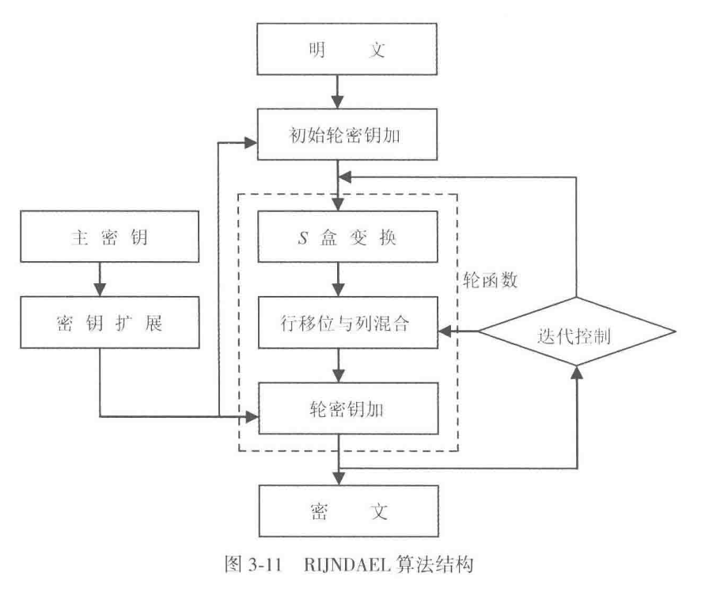
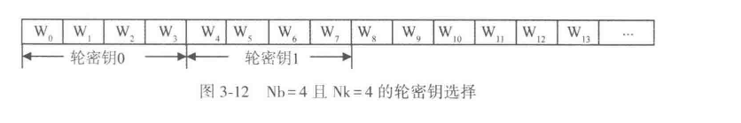
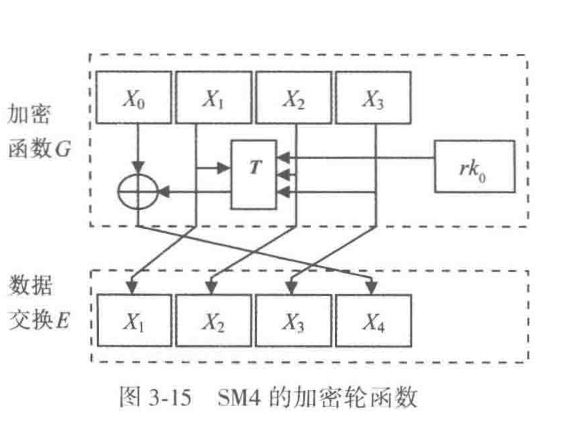

算法介绍-表
AES
3.2.1 数学基础
这里是当年投稿的原论文：这篇。这个是最终出版的标准描述：这篇
AES 的设计思路和 DES 不同。它采用代换-置换网络（substitution-permutation network, SPN）。AES 把分组写成一个状态矩阵，在有限域 \(\mathrm{GF}(2^8)\) 上对字节做代数运算。教材先讲有限域和字节多项式表示，是为了给后面的字节代换、列混合和轮密钥扩展提供统一语言。
有限域 \(GF(2^8)\) 上的元素有几种不同的表示方法，当然不同的表示方法的实现效率不同。RIJNDAEL 算法采用了多项式表示法。
接下来我们规定，把一个字节看成是在有限域 \(GF(2^8)\) 上的一个元素，把一个 4 字节的字看成是系数取自 \(GF(2^8)\)，并且次数小于4次的多项式，下面是一些 人工定义计算方式
定义 3-1 一个由比特位 \(b_7 b_6 b_5 b_4 b_3 b_2 b_1 b_0\) 组成的字节 \(B\) 可表示成系数为 0、1 的二进制多项式： $$ b_7 x^7 + b_6 x^6 + b_5 x^5 + b_4 x^4 + b_3 x^3 + b_2 x^2 + b_1 x^1 + b_0 $$
定义 3-1 在一个字节与一个次数低于 8 次的多项式之间建立了一种对应关系。给出一个字节，取出其各位作为系数便得到对应的次数低于 8 次的多项式。反之，对于一个次数低于 8 次的多项式，取出其系数便得到对应的字节。
例如，设字节 \(B = 10011011\)，则对应的多项式为：\(x^7 + x^4 + x^3 + x + 1\)。又例如，设多项式为：\(x^7 + x^5 + x^2 + x + 1\)，则对应的字节为 \(B = 10100111\)。
定义 3-2 在 \(GF(2^8)\) 上的加法定义为二进制多项式的加法，其系数模 2 相加。
例如，\((x^7 + x^4 + x^3 + x + 1) + (x^6 + x^5 + x^3 + x^2 + x + 1) = (x^7 + x^6 + x^5 + x^4 + x^2)\)，对应的二进制字节加为：\((10011011) \oplus (01101111) = (11110100)\)。
定义 3-3 在 \(GF(2^8)\) 上的乘法（用符号 \(\cdot\) 表示，乘号常可省略）定义为二进制多项式的乘积，再模一个次数为 8 的不可约二进制多项式。
在 RIJNDAEL 中此不可约多项式建议为： $$ m(x) = x^8 + x^4 + x^3 + x + 1 $$ 其系数的十六进制表示为 ‘11B’。
例如， $$ (x^6 + x^4 + x^2 + x + 1) \cdot (x^7 + x + 1) = x^{13} + x^{11} + x^9 + x^8 + x^6 + x^5 + x^4 + x^3 + 1 $$ 而 $$ x^{13} + x^{11} + x^9 + x^8 + x^6 + x^5 + x^4 + x^3 + 1 \mod (x^8 + x^4 + x^3 + x + 1) = x^7 + x^6 + 1 $$
定义 3-4 在 \(GF(2^8)\) 中，二进制多项式 \(b(x)\) 的乘法逆为满足式（3-4）的二进制多项式 \(a(x)\)，并记为 \(a(x) = b^{-1}(x)\)： $$ a(x)b(x) \mod m(x) = 1 $$ 定义 3-5 在 \(GF(2^8)\) 中，倍乘函数 \(\text{xtime}(b(x))\) 定义为 \(x \cdot b(x) \mod m(x)\)。
具体运算时可如下得到：把字节 \(B\) 左移一位（最右位补 0），若 \(b_7 = 1\)，则左移后变成 8 次多项式，需要取模 \(m(x)\)，即异或 ‘11B’。
函数 \(\text{xtime}(x)\) 也被称为 \(x\) 乘或 \(x\) 倍乘。例如，
\[ \begin{align} \text{xtime}(57) &= x(x^6 + x^4 + x^2 + x + 1) \\ &= (x^7 + x^5 + x^3 + x^2 + x) \mod (x^8 + x^4 + x^3 + x + 1) \\ &= x^7 + x^5 + x^3 + x^2 + x \\ &= \text{‘AE’}\\ \end{align} \]又例如
\[ \begin{align} \text{xtime}(\text{AE}) &= x(x^7 + x^5 + x^3 + x^2 + x) \\ &= x^8 + x^6 + x^4 + x^3 + x^2 \mod (x^8 + x^4 + x^3 + x + 1) \\ &= 47\\ \end{align} \]
定义 3-6 有限域 \(GF(2^8)\) 上的多项式是系数取自 \(GF(2^8)\) 域元素的多项式。
这样，一个 4 字节的字与一个次数小于 4 次的 \(GF(2^8)\) 上的多项式相对应。例如，字 \(c = \text{‘03010102’}\) 与多项式 \(c(x) = \text{‘03’}x^3 + \text{‘01’}x^2 + \text{‘01’}x + \text{‘02’}\) 相对应。知道了字 \(c\)，取出各字节作为系数便得到多项式 \(c(x)\)。反之，知道了多项式 \(c(x)\)，取出其各系数便得到字 \(c\)。
定义 3-7 \(GF(2^8)\) 上的多项式的加法定义为相应项系数相加。因为在域 \(GF(2^8)\) 上的加是简单的按位异或，所以在域 \(GF(2^8)\) 上的两个 4 字节的字的加也就是简单的按位异或。
定义 3-8 \(GF(2^8)\) 上的多项式 \(a(x) = a_3 x^3 + a_2 x^2 + a_1 x + a_0\) 和 \(b(x) = b_3 x^3 + b_2 x^2 + b_1 x + b_0\) 相乘模 \(x^4 + 1\) 的积（表示为 \(c(x) = a(x) \cdot b(x)\)）为 \(c(x) = c_3 x^3 + c_2 x^2 + c_1 x + c_0\)，其系数由下面四个式子得到：
利用定义 3-8 有：\(x \cdot b(x) = b_2 x^3 + b_1 x^2 + b_0 x^1 + b_3 \mod (x^4 + 1)\)。
3.2.2 RIJNDAEL 加密算法

接着课本说明它采用的是对轮函数实施迭代的结构。这里采用的是代替/置换网络结构，也就是 SP 结构；课本同时把它和 DES 使用的 Feistel 结构区分开来。图 3-11 表示的流程可以直接按信号流来理解：明文先进入“初始轮密钥加”，之后反复经过轮函数，轮函数内部依次经过 S 盒变换、行移位与列混合、轮密钥加；主密钥先经过密钥扩展，生成每一轮要使用的轮密钥；经过迭代控制以后，最后输出密文。课本把轮函数分成三层：
① 非线性层：进行非线性 S 盒变换 ByteSub，由 16 个 S 盒并置而成，起混淆作用； ② 线性混合层：进行行移位变换 ShiftRow 和列混合变换 MixColumn，以确保多轮之上的高度扩散； ③ 密钥加层：进行轮密钥加变换 AddRoundKey，把轮密钥简单异或到中间状态上，实现密钥的加密控制作用。
这样一来，“加密过程”就落实为围绕“状态”的连续变换。课本下一步先定义状态。
状态的表示
在 Rijndael 算法中，加解密要经过多次数据变换操作，每一次变换操作产生一个中间结果，这个中间结果叫做“状态”。各种不同的密码变换都是对状态进行的。
状态表示为二维字节数组，每个元素是一个字节。它有 4 行，\(Nb\) 列，其中 \(Nb\) 等于数据块长度除以 32。
- 当数据块长度为 128 时，\(Nb=4\)。
- 当数据块长度为 192 时，\(Nb=6\)。
- 当数据块长度为 256 时，\(Nb=8\)。
因为状态数组有 4 行，所以从列的角度看，每一列都是 4 个字节，也就是一个字。有些密码变换是对字节进行的，有些密码变换是对字进行的。
课本给出了 128 位数据块时的状态表。它是一个 \(4\times 4\) 的二维字节数组：
写入状态时采用“列优先”的顺序。对 128 位数据块，字节进入状态的顺序是：
密钥也用二维字节数组表示，每个元素同样是一个字节，有 4 行，\(Nk\) 列，其中 \(Nk\) 等于密钥长度除以 32。对 128 位密钥，它对应的二维字节数组是：
密钥的存储顺序同样是列优先，也就是：
有了 \(Nb\) 和 \(Nk\)，课本再给出轮数 \(Nr\) 的取值。\(Nr\) 由 \(Nb\) 和 \(Nk\) 共同决定，表 3-5 写成下面这个形式：
到这里，课本实际上把后面所有过程的输入对象都准备好了：状态的大小由 \(Nb\) 决定，密钥数组的大小由 \(Nk\) 决定，轮数由 \(Nb\) 和 \(Nk\) 联合决定。
轮函数
课本把 Rijndael 加密算法的轮函数写成标准伪代码：
Round(State, RoundKey)
{
ByteSub(State);
ShiftRow(State);
MixColumn(State);
AddRoundKey(State, RoundKey);
}
这里顺序很重要。状态先经过字节代替，再做行移位，再做列混合，最后和本轮轮密钥异或。
然后课本专门把最后一轮单独写出来：
FinalRound(State, RoundKey)
{
ByteSub(State);
ShiftRow(State);
AddRoundKey(State, RoundKey);
}
最后一轮和标准轮函数相比，少了列混合变换 \(MixColumn(State)\)。这一点课本也直接指出了。
接下来课本把这四个变换逐个展开。
S 盒变换 ByteSub
ByteSub 是按字节进行的代替变换，也叫 S 盒变换。它作用在状态中的每个字节上。这个变换按两步进行。
第一步，把字节的值用它的乘法逆代替。乘法逆根据前文公式（3-4）求得，其中 \(00\) 的逆元是它自己。
第二步，对经过第一步处理后的字节再进行仿射变换。课本给出的公式（3-6）是：
例：设输入字节
\[ X=[x_7,x_6,x_5,x_4,x_3,x_2,x_1,x_0]=[95]=[10010101] \]它的乘法逆为
\[ [8A]=[10001010] \]根据公式（3-15）计算以后，得到
\[ Y=[y_7,y_6,y_5,y_4,y_3,y_2,y_1,y_0]=[2A]=[00101010] \]
值得注意的是
① 公式（3-6）的第一步，也就是字节的乘法逆代替，是一种非线性变换。 ② 由于公式（3-6）的系数矩阵中每列都有 5 个 1，这说明变换输入中的任意一位会影响输出中的 5 位。 ③ 由于公式（3-6）的系数矩阵中每行都有 5 个 1，这说明输出中的每一位都与输入中的 5 位相关。 ④ ByteSub 变换在作用层次上对应 DES 中的 S 盒子。它为加密算法提供非线性，是决定加密算法安全性的关键。它是一个 8 位输入、8 位输出的非线性变换。
接着课本还指出了一个实现层面的要求：为了确保解密算法可逆，由上式定义的 ByteSub 变换必须是可逆的。
Note
可以直接按“每一位输出都由若干位输入异或得到”来理解
行移位变换 ShiftRow
ShiftRow 变换是对状态的行进行循环移位。
课本给出的规则是：在 ShiftRow 变换中，状态的第 0 行不移位，第 1 行循环左移 \(C_1\) 个字节，第 2 行循环左移 \(C_2\) 个字节，第 3 行循环左移 \(C_3\) 个字节。
移位值 \(C_1\)、\(C_2\)、\(C_3\) 与 \(Nb\) 有关，表 3-6 写成：
ByteSub 改变的是每个字节本身，ShiftRow 开始打破“同一列内部”的原有对齐关系，把不同列的字节交错起来，为下一步列混合创造条件。
列混合变换 MixColumn
MixColumn 变换是对状态的列进行混合变换。课本的表述是：在 MixColumn 变换中，把状态中的每一列看做 \(GF(2^8)\) 上的多项式，并与一个固定多项式 \(c(x)\) 相乘，然后模多项式 \(x^4+1\)。
其中
因为 \(c(x)\) 与 \(x^4+1\) 是互素的，从而保证 \(c(x)\) 存在逆多项式 \(d(x)\)，使
只有逆多项式 \(d(x)\) 存在，才能正确进行解密。也就是说，列混合在设计时已经同时考虑了扩散能力和可逆性。
密钥加变换 AddRoundKey
AddRoundKey 变换是利用轮密钥对状态进行模 2 相加的变换。模 2 相加在字节层面就是 异或。
课本这里强调了两个点。第一，轮密钥长度等于数据块长度。第二，在这个操作中，轮密钥被简单地异或到状态中去。轮密钥根据轮密钥产生算法，通过主密钥扩展和选择得到。
到这里，轮函数内部的四步已经完整了。课本随后给出一个几何化理解：可以把 Rijndael 加密算法的数据状态看成玩具魔方的一个侧面，行移位 ShiftRow 对应对魔方的行做循环移位，列混合 MixColumn 对应对魔方的列做操作。由于是从横和竖两个方向共同处理数据状态，所以增强了加密的扩散效果。
轮密钥产生算法
接下来还要把每一轮使用的轮密钥来源接进来，因为状态变换和轮密钥生成共同构成完整的加密过程。课本明确说，轮密钥由主密钥产生，轮密钥产生分两步：密钥扩展和密钥选择，并且遵循下面的原则。
① 轮密钥的比特总数为 数据块长度与轮数加 1 的积。例如，对于 128 位的分组长度和 10 轮迭代，轮密钥总长度为
$$ 128\times(10+1)=1408\text{ 位} $$ ② 首先将用户密钥扩展为一个扩展密钥。 ③ 再从扩展密钥中选出轮密钥：第一个轮密钥由扩展密钥中的前 \(Nb\) 个字组成，第二个轮密钥由接下来的 \(Nb\) 个字组成，以此类推。
密钥扩展
课本使用一个字为元素的一维数组
$$ W[Nb\times(Nr+1)] $$ 来存储扩展密钥。把主密钥放在数组 \(W\) 最开始的 \(Nk\) 个字中，其它字由它前面的字经过处理后得到。之后课本根据 \(Nk\le 6\) 和 \(Nk>6\) 分成两种扩展策略。
当 \(Nk\le 6\) 时，课本给出的伪代码是：
KeyExpansion(CipherKey, W)
{
For(I=0; I<Nk; I++) W[I]=CipherKey[I];
For(I=Nk; I<Nb*(Nr+1); I++)
{
Temp=W[I-1];
IF(I%Nk==0)
Temp=SubByte(Rotl(Temp)) ⊕ Rcon[I/Nk];
W[I]=W[I-Nk] ⊕ Temp;
}
}
最前面的 \(Nk\) 个字由主密钥直接填充。之后的每一个字 \(W[I]\) 都等于前面一个字 \(W[I-1]\) 与前面第 \(Nk\) 个位置的字 \(W[I-Nk]\) 的异或。只有当 \(I\) 是 \(Nk\) 的整数倍时，才先对 \(W[I-1]\) 进行额外变换，再参与异或。
这个额外变换由两部分组成。
第一部分是 \(Rotl\) 变换。\(Rotl\) 是对一个字的 4 个字节按字节单位进行循环移位的函数。设
$$ W=(A,B,C,D) $$ 则
$$ Rotl(W)=(B,C,D,A) $$ 第二部分是 \(SubByte\) 变换，也就是对字中的每个字节逐个做前面定义过的 ByteSub。
然后再异或一个轮常数 \(Rcon\)。课本给出的定义是：
课本接着说明，使用轮常数 \(Rcon\) 的目的，是防止不同轮的轮密钥存在相似性。由于轮常数 \(Rcon\) 是变化的，所以不同轮的轮密钥明显不同。
当 \(Nk>6\) 时，伪代码是：
KeyExpansion(CipherKey, W)
{
For(I=0; I<Nk; I++) W[I]=CipherKey[I];
For(I=Nk; I<Nb*(Nr+1); I++)
{
Temp=W[I-1];
IF(I%Nk==0)
Temp=SubByte(Rotl(Temp)) ⊕ Rcon[I/Nk];
ELSE IF(I%Nk==4)
Temp=SubByte(Temp);
W[I]=W[I-Nk] ⊕ Temp;
}
}
这里和前一种策略相比，多出来的分支是 \(I\%Nk=4\) 时还要执行一次 \(Temp=SubByte(Temp)\)
因为，当 \(Nk>6\) 时，密钥更长。若仍然只在 \(I\) 是 \(Nk\) 的整数倍时对字进行 ByteSub，那么 ByteSub 变换的密度较稀，安全程度不够强。现在在 \(I\bmod Nk=4\) 的位置增加一部分字的 ByteSub 变换，就提高了扩展密钥的安全性。
轮密钥选择
轮密钥 \(I\) 由轮密钥缓冲区 \(W[Nb\times I]\ \text{到}\ W[Nb\times(I+1)-1]\) 中的字组成。

以 \(Nb=4\) 且 \(Nk=4\) 为例，图 3-12 表示的选择顺序就是：
- 轮密钥 0：\(W_0,W_1,W_2,W_3\)
- 轮密钥 1：\(W_4,W_5,W_6,W_7\)
- 轮密钥 2：\(W_8,W_9,W_{10},W_{11}\)
- 轮密钥 3：\(W_{12},W_{13},\dots\)
于是，扩展密钥形成一条连续的一维字数组，每一轮轮密钥都从其中按 \(Nb\) 个字为一组顺次切出。
加密算法的整体过程
前面的状态、轮函数和轮密钥现在可以合到一起。课本明确写出，Rijndael 加密算法由以下三部分组成：
① 一个初始轮密钥加。 ② \(Nr-1\) 轮标准轮函数。 ③ 最后一轮的非标准轮函数。
然后给出总伪代码：
Rijndael(State, CipherKey)
{
KeyExpansion(CipherKey, RoundKey)
AddRoundKey(State, ExpandedKey)
For(I=1; I<Nr; I++)
Round(State, ExpandedKey+Nb*I)
{
ByteSub(State);
ShiftRow(State);
MixColumn(State);
AddRoundKey(State, ExpandedKey+Nb*I);
}
FinalRound(State, ExpandedKey+Nb*Nr)
{
ByteSub(State);
ShiftRow(State);
AddRoundKey(State, ExpandedKey+Nb*Nr);
}
}
课本随后解释，这里的 \(ExpandedKey\) 就是前面存储扩展密钥的数组 \(W[Nb\times(Nr+1)]\)
把整段内容顺下来，加密过程就形成了课本中的完整链条：
先把明文按列优先写入状态，把主密钥按列优先写成密钥数组；由 \(Nb\) 和 \(Nk\) 决定轮数 \(Nr\)；再由主密钥做扩展，得到扩展密钥数组 \(W[Nb\times(Nr+1)]\)；先执行一次初始轮密钥加；之后执行 \(Nr-1\) 轮标准轮函数，每一轮都依次做 ByteSub、ShiftRow、MixColumn、AddRoundKey；最后执行一轮省去 MixColumn 的 FinalRound；输出状态，此时它就是密文。
可以，下面把上一条改成行内公式统一用 $...$ 包裹的版本。
课本这一节先从一个事实开始：Rijndael 的解密流程无法直接照搬加密流程。原因在于，这个算法属于非对合运算；同一套操作连续作用两次，结果不会自动回到原文。沿着“解密就是把加密所做的事逐步还原”这个思路，最直接的写法当然是把加密过程倒着执行。课本接着指出，这样写虽然概念上直接，工程实现的结构却较散。Rijndael 设计得很巧，通过稍微调整轮密钥的扩展方式，可以把解密改写成一种等价形式。这样一来，解密也能组织成“初始轮密钥加 + 多轮迭代 + 最后一轮”的框架，整体结构就和加密算法靠得很近，利于实现和复用。
要把这件事讲清楚，先要把每个基本变换的逆变换交代完整，因为整个解密算法就是由这些逆变换拼起来的。
3.2.3 解密
1. 逆变换
课本先讨论行移位的逆。加密时，\(\mathrm{ShiftRow}\) 把状态矩阵的第 \(1,2,3\) 行依次循环左移 \(C_1,C_2,C_3\) 个字节。于是解密时就要把这三行依次移回去。课本写成：\(\mathrm{ShiftRow}\) 的逆是状态的后三行依次移动 \(Nb-C_1\)、\(Nb-C_2\) 和 \(Nb-C_3\) 个字节。因为状态一行一共有 \(Nb\) 个字节，向左移 \(C_i\) 个字节和向右移 \(Nb-C_i\) 个字节在循环意义下是同一件事，所以这个逆操作正好能把行内字节恢复到加密前的位置。
接着是列混合的逆。加密阶段中，每一列状态都被看成 \(GF(2^8)\) 上的一个三次以下多项式，并与固定多项式 \(c(x)\) 相乘。解密时就要乘上它的逆多项式。课本把逆变换写成：
随后课本说明，式 \((3\text{-}7)\) 中的 \(c(x)\) 与式 \((3\text{-}8)\) 中的 \(d(x)\) 的积等于单位元 \(\texttt{'01'}\)，所以 \(d(x)\) 正是 \(c(x)\) 的逆多项式。这里的意思很直接：加密时对列做过一次“乘 \(c(x)\)”的混合，解密时再做一次“乘 \(d(x)\)”，两次作用合在一起就把这一列带回原状。
然后是轮密钥加。\(\mathrm{AddRoundKey}\) 的运算本质是按位异或。异或有一个很关键的性质：同一个值异或两次就会回到原值。因此课本直接给出结论，\(\mathrm{AddRoundKey}\) 的逆就是它自己。设状态为 \(S\)，轮密钥为 \(K\)，那么
这也是解密中最容易理解的一步。
接下来最值得仔细解释的是 \(\mathrm{ByteSub}\) 的逆，也就是 \(\mathrm{InvByteSub}\)。课本写道：\(\mathrm{ByteSub}\) 的逆是把 \(S_box\) 的逆作用到状态的每个字节上。构造方法分成两步，顺序和加密时相反。加密时先做有限域上的乘法逆，再做仿射变换；于是解密时先把仿射变换反过来，再对结果取 \(GF(2^8)\) 上的乘法逆。课本把仿射逆变换写成式 \((3\text{-}9)\)
课本紧接着说明，式 \((3\text{-}9)\) 是根据前面的式 \((3\text{-}6)\) 推导出来的，两式中的矩阵互为逆矩阵，所以这一步确实会把加密时做过的仿射变换抵消掉。
这一段还给了一个和前文相衔接的例子。前面在 \(\mathrm{ByteSub}\) 中举过例子，输入
经过 \(\mathrm{ByteSub}\) 得到
现在把这个 \(Y\) 代入式 \((3\text{-}9)\)，可得
再对它求乘法逆，得到
恰好回到式 \((3\text{-}6)\) 中举例时的输入 \(X\)。这个例子把 \(\mathrm{InvByteSub}\) 的两步顺序表现得很清楚：先逆仿射，再取乘法逆，原字节就回来了。
把四个基本逆变换放在一起看，逻辑很统一。加密时，\(\mathrm{ByteSub}\) 负责在字节层面引入非线性，\(\mathrm{ShiftRow}\) 负责打散行内位置，\(\mathrm{MixColumn}\) 负责在列内扩散，\(\mathrm{AddRoundKey}\) 负责把密钥注入状态；解密时，每一步都按相反方向把这些作用一层层消掉。
2. 逆轮函数的定义
在基本逆变换已经齐全以后，课本把它们组织成一个逆轮函数。标准逆轮函数定义为：
Inv_Round(State, Inv_RoundKey)
{
InvByteSub(State);
InvShiftRow(State);
InvMixColumn(State);
AddRoundKey(State, Inv_RoundKey);
}
最后一轮的非标准逆轮函数定义为：
Inv_FinalRound(State, Inv_RoundKey)
{
InvByteSub(State);
InvShiftRow(State);
AddRoundKey(State, Inv_RoundKey);
}
这里最值得注意的是顺序。直接从“把加密过程倒过来”的角度去想，很多人会自然想到先处理轮密钥，再处理字节和行列变换。课本这一节给出的写法属于“等价解密算法”的组织方式，它提前把中间各轮的轮密钥做了一个额外处理，于是逆轮函数也能排成和加密轮函数很接近的样子：先做字节代替，再做行移位，再做列混合，最后做轮密钥加。这样写的价值主要体现在工程上。加密和解密两边都保留了相似的轮结构，硬件流水和软件代码都更容易统一设计。
你可以把这件事理解成一次“把麻烦挪到密钥预处理阶段”。原本应当出现在轮函数内部的某些逆向调整，被吸收到 \(\mathrm{Inv_KeyExpansion}\) 里了。这样轮函数主体就更整齐。
3. 解密算法
接着课本把整个解密流程写出来。伪 C 代码如下：
Inv_Rijndael(State, CipherKey)
{
Inv_KeyExpansion(CipherKey, Inv_ExpandedKey);
AddRoundKey(State, Inv_ExpandedKey+Nb*Nr);
For(I=Nr-1; I>0; I--)
Inv_Round(State, Inv_ExpandedKey+Nb*I);
Inv_FinalRound(State, Inv_ExpandedKey)
}
如果把其中各个轮函数的内容一并展开，课本给出的结构等价于：
Inv_Rijndael(State, CipherKey)
{
Inv_KeyExpansion(CipherKey, Inv_ExpandedKey);
AddRoundKey(State, Inv_ExpandedKey+Nb*Nr);
For(I=Nr-1; I>0; I--)
Inv_Round(State, Inv_ExpandedKey+Nb*I);
{
InvByteSub(State);
InvShiftRow(State);
InvMixColumn(State);
AddRoundKey(State, Inv_ExpandedKey+Nb*I);
}
Inv_FinalRound(State, Inv_ExpandedKey)
{
InvByteSub(State);
InvShiftRow(State);
AddRoundKey(State, Inv_ExpandedKey);
}
}
这段代码要按“密文是怎样一步步被还原成明文”的顺序去理解。
首先，输入状态此时装的是密文。然后先做 \(\mathrm{Inv_KeyExpansion}\)，把用户主密钥扩展成解密用的轮密钥序列。这个扩展序列在排列顺序上和加密共用同一批轮号，中间各轮的内容已经经过 \(\mathrm{InvMixColumn}\) 预处理。
\(AddRoundKey(State, Inv_ExpandedKey+Nb*Nr)\) 使用的是最后一轮轮密钥。这里和加密正好对应。加密时，一开始先用第 \(0\) 轮轮密钥；解密时，一开始先用第 \(Nr\) 轮轮密钥，因为当前状态来自加密的最后输出，恢复过程自然要先抵消最后一次轮密钥加。
接着进入循环：\(For(I=Nr-1; I>0; I--)\)。这说明解密时轮号是倒着走的，从 \(Nr-1\) 一直走到 \(1\)。每一轮都做四件事：\(\mathrm{InvByteSub}\)、\(\mathrm{InvShiftRow}\)、\(\mathrm{InvMixColumn}\)、\(\mathrm{AddRoundKey}\)。循环结束后，状态中还剩最开头那一轮留下的影响，于是最后再执行一次最后一轮逆轮函数，并使用第 \(0\) 轮轮密钥，也就是 \(Inv_ExpandedKey\) 指向的那一组字。
如果把 AES 常见的 128 位分组情形代进去，也就是 \(Nb=4\)、\(Nk=4\)、\(Nr=10\)，那么解密流程就会变得很直观：密文进入状态后，先和第 \(10\) 轮轮密钥异或；然后依次执行第 \(9,8,7,6,5,4,3,2,1\) 轮的逆轮函数；最后执行一次使用第 \(0\) 轮轮密钥的逆末轮，输出明文。轮密钥的使用方向和加密正好相反，这也是课本在后面单独提醒的一点。
- 解密密钥扩展为什么要单独定义
课本在伪代码后面专门写了一句提醒：解密算法与加密算法使用轮密钥的顺序相反。紧接着又说明，解密算法的密钥扩展定义包含两步。
第一步，先执行加密算法的密钥扩展。
第二步，把 \(\mathrm{InvMixColumn}\) 应用到除第一个轮密钥和最后一个轮密钥之外的所有轮密钥上。
课本给出的伪 C 代码是：
Inv_KeyExpansion(CipherKey, Inv_ExpandedKey)
{
Key_Expansion(CipherKey, Inv_ExpandedKey);
For(I=1; I<Nr; I++)
InvMixColumn(Inv_ExpandedKey+Nb*I);
}
这一段是整节内容中最关键的工程技巧。它解决的问题是：怎样让解密也写成和加密近似的轮结构。
可以把它拆成三层来看。
第一层，普通的 \(\mathrm{Key_Expansion}\) 先生成加密时那套完整的扩展密钥序列。此时共有 \(Nr+1\) 组轮密钥，从第 \(0\) 轮到第 \(Nr\) 轮。
第二层，对中间各轮，也就是 \(I=1,2,\dots,Nr-1\) 这些轮密钥，逐组施加 \(\mathrm{InvMixColumn}\)。第一个轮密钥和最后一个轮密钥保持原状。课本之所以单独把这两组排除出去，是因为解密算法的首尾两轮本来就和标准轮不同，它们内部本来就缺少 \(\mathrm{InvMixColumn}\) 这一步；既然轮函数里缺少这一步，轮密钥也就不再为它做配套预处理。
第三层，这样处理之后，轮函数中的 \(\mathrm{AddRoundKey}\) 可以被放到 \(\mathrm{InvMixColumn}\) 的后面，同时仍与直接逆运算得到的结果等价。于是解密轮函数在外形上就和加密轮函数非常接近了。
从代数上看，这一步利用的是列混合作为线性变换与异或运算之间的相容性。把状态记为 \(S\)，轮密钥记为 \(K\)，线性变换记为 \(L\)，则有
\(\mathrm{InvMixColumn}\) 恰好属于这样的线性变换，所以它既可以作用在状态上，也可以预先作用到轮密钥上。正是这个性质，使“等价解密算法”成立。
3.3 中国商用密码算法 SM4
2006 年我国国家密码管理局公布了无线局域网产品使用的 SM4 密码算法。这是我国第一次公布自己的商用密码算法，意义重大。这一举措标志着我国商用密码管理更加科学化。这必将促进我国商用密码的科学研究和产业发展。
SM4 密码算法设计简洁，算法结构有特色，安全高效。它的公开颁布向世界展示了我国在商用密码方面的研究成果。
3.3.1 SM4 算法描述
SM4 密码算法是一个分组算法，数据分组长度为 128 比特，密钥长度为 128 比特。加密算法与密钥扩展算法都采用 32 轮迭代结构。SM4 密码算法以字节（8 位）和字（32 位）为单位进行加解密数据处理。SM4 密码算法是对合运算，因此解密算法与加密算法相同，轮密钥的使用顺序相反。
1. 基本运算
SM4 密码算法使用模 2 加和循环移位作为基本运算。
① 模 2 加：\(\oplus\)，32 位异或运算。
② 循环移位：\(\lll i\)，把 32 位字循环左移 \(i\) 位。
2. 基本密码部件
SM4 密码算法使用了以下基本密码部件。
1）S 盒
SM4 的 S 盒是一种以字节为单位的非线性代替变换，其密码学的作用是起混淆作用，使明文、密钥、密文之间的关系错综复杂，提高安全性。S 盒的输入和输出都是 8 位的字节。它本质上是 8 位的非线性置换，设输入字节为 \(a\)，输出字节为 \(b\)，则 S 盒的运算可表示为： $$ b=S_{box}(a) \tag{3-22} $$ S 盒的代替规则如表 3-9 所示。例如，设 S 盒的输入为 EF，则 S 盒的输出为表 3-9 中第 E 行与第 F 列交点处的值 84。即，\(S_{box}(\mathrm{EF})=84\)。
表 3-9 的 S 盒表如下：
| 高位\低位 | 0 | 1 | 2 | 3 | 4 | 5 | 6 | 7 | 8 | 9 | A | B | C | D | E | F |
|---|---|---|---|---|---|---|---|---|---|---|---|---|---|---|---|---|
| 0 | D6 | 90 | E9 | FE | CC | E1 | 3D | B7 | 16 | B6 | 14 | C2 | 28 | FB | 2C | 05 |
| 1 | 2B | 67 | 9A | 76 | 2A | BE | 04 | C3 | AA | 44 | 13 | 26 | 49 | 86 | 06 | 99 |
| 2 | 9C | 42 | 50 | F4 | 91 | EF | 98 | 7A | 33 | 54 | 0B | 43 | ED | CF | AC | 62 |
| 3 | E4 | B3 | 1C | A9 | C9 | 08 | E8 | 95 | 80 | DF | 94 | FA | 75 | 8F | 3F | A6 |
| 4 | 47 | 07 | A7 | FC | F3 | 73 | 17 | BA | 83 | 59 | 3C | 19 | E6 | 85 | 4F | A8 |
| 5 | 68 | 6B | 81 | B2 | 71 | 64 | DA | 8B | F8 | EB | 0F | 4B | 70 | 56 | 9D | 35 |
| 6 | 1E | 24 | 0E | 5E | 63 | 58 | D1 | A2 | 25 | 22 | 7C | 3B | 01 | 21 | 78 | 87 |
| 7 | D4 | 00 | 46 | 57 | 9F | D3 | 27 | 52 | 4C | 36 | 02 | E7 | A0 | C4 | C8 | 9E |
| 8 | EA | BF | 8A | D2 | 40 | C7 | 38 | B5 | A3 | F7 | F2 | CE | F9 | 61 | 15 | A1 |
| 9 | E0 | AE | 5D | A4 | 9B | 34 | 1A | 55 | AD | 93 | 32 | 30 | F5 | 8C | B1 | E3 |
| A | 1D | F6 | E2 | 2E | 82 | 66 | CA | 60 | C0 | 29 | 23 | AB | 0D | 53 | 4E | 6F |
| B | D5 | DB | 37 | 45 | DE | FD | 8E | 2F | 03 | FF | 6A | 72 | 6D | 6C | 5B | 51 |
| C | 8D | 1B | AF | 92 | BB | DD | BC | 7F | 11 | D9 | 5C | 41 | 1F | 10 | 5A | D8 |
| D | 0A | C1 | 31 | 88 | A5 | CD | 7B | BD | 2D | 74 | D0 | 12 | B8 | E5 | B4 | B0 |
| E | 89 | 69 | 97 | 4A | 0C | 96 | 77 | 7E | 65 | B9 | F1 | 09 | C5 | 6E | C6 | 84 |
| F | 18 | F0 | 7D | EC | 3A | DC | 4D | 20 | 79 | EE | 5F | 3E | D7 | CB | 39 | 48 |
2）非线性变换 \(\tau\)
SM4 的非线性变换是一种以字为单位的非线性代替变换。它由 4 个 S 盒并行构成。本质上它是 S 盒的一种并行应用。
设输入字为 \(A=(a_0,a_1,a_2,a_3)\)，输出字为 \(B=(b_0,b_1,b_2,b_3)\)，则 $$ B=\tau(A)=\bigl(S_{box}(a_0), S_{box}(a_1), S_{box}(a_2), S_{box}(a_3)\bigr) \tag{3-23} $$ 3）线性变换部件 \(L\)
线性变换部件 \(L\) 是以字为处理单位的线性变换部件，其输入输出都是 32 位的字。其密码学的作用是起扩散的作用，把 S 盒的混淆作用尽可能地扩散到更大范围。
设 \(L\) 的输入为字 \(B\)，输出为字 \(C\)，则 $$ \begin{aligned} C=L(B) &=B\oplus(B\lll 2)\oplus(B\lll 10)\oplus(B\lll 18)\oplus(B\lll 24) \end{aligned} \tag{3-24} $$ 4）合成变换 \(T\)
合成变换 \(T\) 由非线性变换 \(\tau\) 和线性变换 \(L\) 复合而成，数据处理的单位是字。设输入为字 \(X\)，则对 \(X\) 进行非线性 \(\tau\) 变换，再进行线性 \(L\) 变换。记为 $$ T(X)=L(\tau(X)) \tag{3-25} $$ 由于合成变换 \(T\) 是非线性变换 \(\tau\) 和线性变换 \(L\) 的复合，所以它综合起到混淆和扩散的作用，从而提高密码的安全性。
3. 轮函数
SM4 密码算法采用基本轮函数进行迭代的结构，利用上述基本密码部件，便可构成轮函数。SM4 密码算法的轮函数是一种以字为处理单位的密码函数。
设轮函数 \(F\) 的输入为 \((X_0,X_1,X_2,X_3)\)，四个 32 位字，共 128 位。轮密钥为 \(rk\)，\(rk\) 也是一个 32 位的字。轮函数 \(F\) 的输出也是一个 32 位的字。轮函数 \(F\) 的运算由式（3-26）给出： $$ F(X_0,X_1,X_2,X_3,rk)=X_0\oplus T(X_1\oplus X_2\oplus X_3\oplus rk) \tag{3-26} $$ 根据式（3-25），有 $$ F(X_0,X_1,X_2,X_3,rk)=X_0\oplus L\bigl(\tau(X_1\oplus X_2\oplus X_3\oplus rk)\bigr) $$ 简记 \(B=(X_1\oplus X_2\oplus X_3\oplus rk)\)，根据式（3-22）和式（3-23），有 $$ \begin{aligned} F(X_0,X_1,X_2,X_3,rk)= &X_0\oplus \bigl[S_{box}(B)\bigr]\oplus \bigl[S_{box}(B)\lll 2\bigr]\ &\oplus \bigl[S_{box}(B)\lll 10\bigr]\oplus \bigl[S_{box}(B)\lll 18\bigr]\oplus \bigl[S_{box}(B)\lll 24\bigr] \end{aligned} \tag{3-27} $$ 根据式（3-27）可以得到图 3-13 的轮函数结构图，其中 \(B=(X_1\oplus X_2\oplus X_3\oplus rk)\)，\(S\) 表示 \(S_{box}\) 变换，\(T\) 变换框表示由式（3-25）的 \(T\) 变换。
4. 加密算法
SM4 密码算法是一个分组算法。数据分组长度为 128 比特，密钥长度为 128 比特。加密算法采用 32 轮迭代结构，每轮使用一个轮密钥。
设输入明文为 \((X_0,X_1,X_2,X_3)\)，四个字，共 128 位。输入轮密钥为 \(rk_i\)，\(i=0,1,\cdots,31\)，共 32 个字。输出密文为 \((Y_0,Y_1,Y_2,Y_3)\)，四个字，128 位。则加密算法可描述如下。
加密算法： $$ \begin{aligned} X_{i+4}&=F(X_i,X_{i+1},X_{i+2},X_{i+3},rk_i)\ &=X_i\oplus T(X_{i+1}\oplus X_{i+2}\oplus X_{i+3}\oplus rk_i),\ i=0,1,\cdots,31 \end{aligned} \tag{3-28} $$ 为了与解密算法需要的顺序一致，在加密算法之后还需要增加一个反序处理 \(R\)： $$ R(Y_0,Y_1,Y_2,Y_3)=(X_{35},X_{34},X_{33},X_{32}) \tag{3-29} $$ 原文紧接着说明，SM4 的加密迭代处理有自己的特点：一次处理四个字，产生一个字的中间密文，这个中间密文再与前三个字拼接，作为下一轮输入，共迭代 32 轮。整个过程可以看成一个宽度为四个字的窗口向前滑动，每轮滑动一个字，总共滑动 32 次。
5. 解密算法
SM4 密码算法是对合运算，因此解密算法与加密算法相同，轮密钥的使用顺序反过来，解轮密钥就是加密轮密钥的逆序。
设输入密文为 \((Y_0,Y_1,Y_2,Y_3)\)，输入轮密钥为 \(rk_i\)，\(i=31,30,\cdots,1,0\)，输出明文为 \((M_0,M_1,M_2,M_3)\)。根据式（3-29）应有 \((Y_0,Y_1,Y_2,Y_3)=(X_{35},X_{34},X_{33},X_{32})\)。因为加密算法结束后加了一个反序变换 \(R\)，反序后的密文数据刚好符合这一要求。于是，在解密算法中直接采用 \((X_{35},X_{34},X_{33},X_{32})\) 表示初始的待解密密文，用 \(X_i\) 表示解密过程中的中间数据。于是可得到如下解密算法。
解密算法： $$ \begin{aligned} X_i&=F(X_{i+4},X_{i+3},X_{i+2},X_{i+1},rk_i)\ &=X_{i+4}\oplus T(X_{i+3}\oplus X_{i+2}\oplus X_{i+1}\oplus rk_i),\ i=31,30,\cdots,1,0 \end{aligned} \tag{3-30} $$ 与加密算法后需要一个反序处理一样，解密算法之后也需要一个反序处理 \(R\)： $$ R(M_0,M_1,M_2,M_3)=(X_3,X_2,X_1,X_0) \tag{3-31} $$
6. 密钥扩展算法
SM4 密码算法使用 128 位的加密密钥，并采用 32 轮迭代加密结构，每一轮加密使用一个 32 位的轮密钥，共使用 32 个轮密钥。因此需要使用密钥扩展算法，从加密密钥产生出 32 个轮密钥。
（1）常数 \(FK\)
在密钥扩展中使用如下常数： $$ FK_0=(\mathrm{A3B1BAC6}),\quad FK_1=(\mathrm{56AA3350}),\quad FK_2=(\mathrm{677D9197}),\quad FK_3=(\mathrm{B27022DC}) $$ （2）固定参数 \(CK\)
其使用 32 个固定参数 \(CK_i\)，\(CK_i\) 是一个字，其产生规则如下：
设 \(ck_{i,j}\) 为 \(CK_i\) 的第 \(j\) 字节（\(i=0,1,\cdots,31；j=0,1,2,3\)），即 \(CK_i=(ck_{i,0},ck_{i,1},ck_{i,2},ck_{i,3})\)，则 $$ ck_{i,j}=(4i+j)\times 7 (\bmod 256) \tag{3-32} $$ 这 32 个固定参数如下（16 进制）： $$ \begin{aligned} &00070e15,\quad 1c232a31,\quad 383f464d,\quad 545b6269,\ &70777e85,\quad 8c939aa1,\quad a8afb6bd,\quad c4cbd2d9,\ &e0e7eef5,\quad fc030a11,\quad 181f262d,\quad 343b4249,\ &50575e65,\quad 6c737a81,\quad 888f969d,\quad a4abb2b9,\ &c0c7ced5,\quad dce3eaf1,\quad f8ff060d,\quad 141b2229,\ &30373e45,\quad 4c535a61,\quad 686f767d,\quad 848b9299,\ &a0a7aeb5,\quad bcc3cad1,\quad d8dfe6ed,\quad f4fb0209,\ &10171e25,\quad 2c333a41,\quad 484f565d,\quad 646b7279 \end{aligned} $$ （3）密钥扩展算法
设输入加密密钥为 \(MK=(MK_0,MK_1,MK_2,MK_3)\)，输出轮密钥为 \(rk_i\)，\(i=0,1,\cdots,30,31\)，中间数据为 \(K_i\)，\(i=0,1,\cdots,34,35\)。则密钥扩展算法可描述如下。
密钥扩展算法：
① \((K_0,K_1,K_2,K_3)=(MK_0\oplus FK_0,\ MK_1\oplus FK_1,\ MK_2\oplus FK_2,\ MK_3\oplus FK_3)\)
② for \(i=0,1,\cdots,30,31\) do $$ rk_i=K_{i+4}=K_i\oplus T'(K_{i+1}\oplus K_{i+2}\oplus K_{i+3}\oplus CK_i) $$ 原文这里专门说明：式中的 \(T'\) 变换与加密算法轮函数中的 \(T\) 基本相同，只将其中的线性变换 \(L\) 修改为以下的 \(L'\)： $$ L'(B)=B\oplus(B\lll 13)\oplus(B\lll 23) $$ 分析密钥扩展算法可以看出，在算法结构方面密钥扩展算法与加密算法类似，也是采用了 32 轮类似的迭代处理。这里还要特别注意，密钥扩展算法中采用了非线性变换 \(\tau\)，这会加强密钥扩展的安全性。这一点与 AES 密码类似。
3.3.2 SM4 的可逆性和对合性
可逆性是对密码算法的基本要求，对合性可使密码算法实现的工作量减半。原文接下来开始证明 SM4 的逆性和对合性。
为了便于分析理解，书中把图 3-13 中的轮函数稍微改画，画成图 3-15 的简洁形式。从图 3-15 可以看出，SM4 的加密轮函数由两个运算组成，它们分别是加密函数 \(G_i\) 和数据交换 \(E_i\)。

首先，根据图 3-15 的轮函数，把其中的加密函数 \(G_i\) 的运算写成： $$ \begin{aligned} G_i&=G_i(X_i,X_{i+1},X_{i+2},X_{i+3},rk_i)\ &=\bigl(X_i\oplus T(X_{i+1},X_{i+2},X_{i+3},rk_i), X_{i+1}, X_{i+2}, X_{i+3}\bigr) \end{aligned} \tag{3-33} $$
把 4 个数据字 \(X_i,X_{i+1},X_{i+2},X_{i+3}\) 和 1 个轮密钥 \(rk_i\) 送入 \(G_i\) 加密函数进行加密，输出结果仍为 4 个字，其中最左边的字为 \(X_i\oplus T(X_{i+1},X_{i+2},X_{i+3},rk_i)\)，后面依次是 \(X_{i+1},X_{i+2},X_{i+3}\)。
加密函数 \(G_i\) 是对合运算，这是因为： $$ \begin{aligned} (G_i)^2&=G_i(G_i)\ &=G_i\bigl(X_i\oplus T(X_{i+1},X_{i+2},X_{i+3},rk_i), X_{i+1}, X_{i+2}, X_{i+3}, rk_i\bigr)\ &=\bigl(X_i\oplus T(X_{i+1},X_{i+2},X_{i+3},rk_i)\oplus T(X_{i+1},X_{i+2},X_{i+3},rk_i), X_{i+1}, \X_{i+2}, X_{i+3}\bigr)\ &=(X_i,X_{i+1},X_{i+2},X_{i+3})\ &=I \end{aligned} \tag{3-34} $$ 其中 \(I\) 是恒等变换。这说明 \(G_i=G_i^{-1}\)，因此 \(G_i\) 是对合运算。
其次，把图 3-15 的轮函数中的数据在右边按逆序作一轮交换 \(E\) 写成： $$ E(X_{i+4},(X_{i+1},X_{i+2},X_{i+3}))=((X_{i+1},X_{i+2},X_{i+3}),X_{i+4}) \tag{3-35} $$ 它表示把最左边的数据字 \(X_{i+4}\) 放到最右边；把右边的 3 个数据字 \((X_{i+1},X_{i+2},X_{i+3})\) 作为一个整体放到左边。这里需要注意，数据交换是把 \((X_{i+1},X_{i+2},X_{i+3})\) 看成一个整体，与 \(X_{i+4}\) 进行交换。
于是，根据式（3-35）可得： $$ \begin{aligned} E^2&=E\bigl[E(X_{i+4},(X_{i+1},X_{i+2},X_{i+3}))\bigr]\ &=E\bigl[((X_{i+1},X_{i+2},X_{i+3}),X_{i+4})\bigr]\ &=(X_{i+4},(X_{i+1},X_{i+2},X_{i+3}))\ &=I \end{aligned} \tag{3-36} $$ 即，\(E^2=I\)，\(E=E^{-1}\)。所以 \(E\) 是对合运算。
根据式（3-34）和式（3-36），\(G_i\) 和 \(E\) 都是对合的，因此图 3-15 的轮函数是对合的。
接着，原文指出，SM4 每一轮参与交换的两个数据块长度存在差异：一个数据块是一个字，另一个数据块是 3 个字组成的整体。由此，密码学界称 DES 的密码结构是均衡型 Feistel 结构，而 SM4 的密码结构是不均衡型 Feistel 结构。
根据图 3-15，利用式（3-33）和式（3-35），可以把 SM4 的轮函数写成： $$ F_i=F(X_i,X_{i+1},X_{i+2},X_{i+3},rk_i)=G_iE \tag{3-37} $$ 进一步，根据图 3-16，利用式（3-37），可以把 SM4 的加密过程和反序处理 \(R\) 写成： $$ SM4=G_0E G_1E \cdots G_{30}E G_{31}R \tag{3-38} $$ 类似地，根据图 3-17，利用式（3-37），可以把 SM4 的解密过程和反序处理 \(R\) 写成： $$ SM4^{-1}=G_{31}E G_{30}E \cdots G_1E G_0R \tag{3-39} $$ 式（3-38）和式（3-39）中的下标表示轮密钥的序号。比较这两个式子，可以看出，SM4 的加密过程（含反序）与解密过程（含反序）的运算相同，轮密钥的使用顺序反过来。这就说明，SM4 的加密算法是对合运算。
最后，原文还直接用数据变化过程证明可逆性。
根据图 3-16，把明文 \((X_0,X_1,X_2,X_3)\) 加密过程中数据变化写成： $$ (X_0,X_1,X_2,X_3)\to (X_1,X_2,X_3,X_4)\to (X_2,X_3,X_4,X_5)\to \cdots \to (X_{32},X_{33},X_{34},X_{35})\to (X_{35},X_{34},X_{33},X_{32})=(Y_0,Y_1,Y_2,Y_3) \tag{3-40} $$ 其中最后一步是反序变换。
同样，根据图 3-17，把密文 \((Y_0,Y_1,Y_2,Y_3)\) 解密过程中数据的变化写成： $$ (X_{35},X_{34},X_{33},X_{32})\to (X_{34},X_{33},X_{32},X_{31})\to (X_{33},X_{32},X_{31},X_{30})\to \cdots \to (X_3,X_2,X_1,X_0)\to (X_0,X_1,X_2,X_3) \tag{3-41} $$ 其中最后一步是反序变换。
比较式（3-40）和式（3-41）中的加解密数据变化，可以得出： $$ SM4^{-1}(SM4(X_0,X_1,X_2,X_3))=(X_0,X_1,X_2,X_3) \tag{3-42} $$ 式（3-42）说明，SM4 加密算法是可逆的。